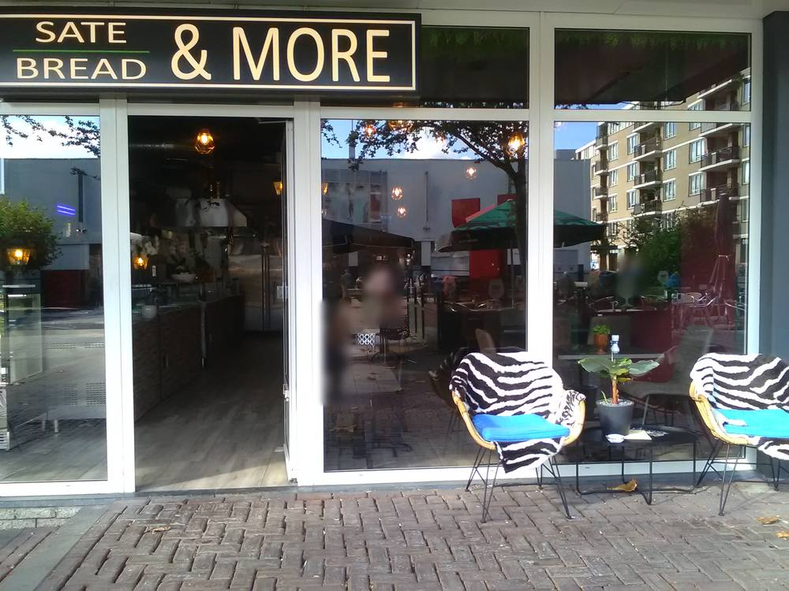
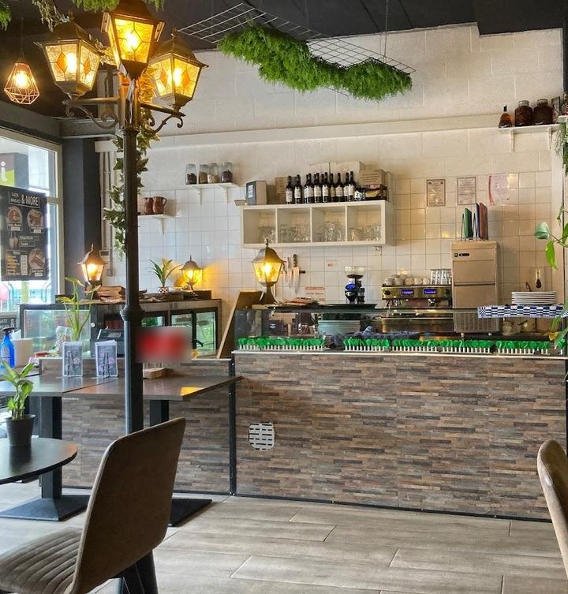
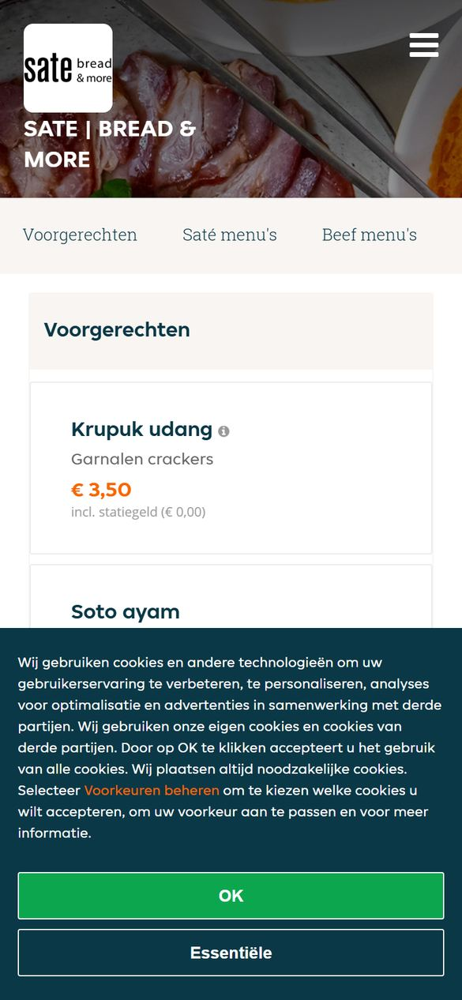
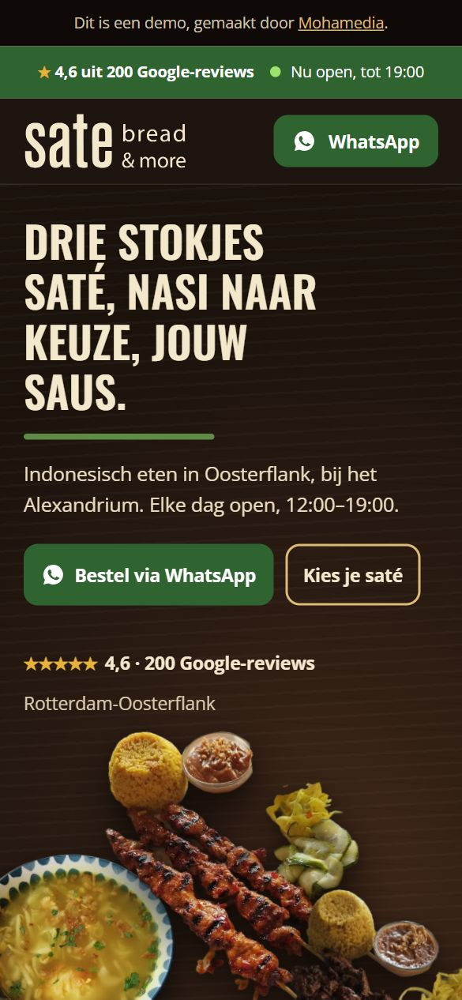

Malse saté
Klanten schrijven dat de saté mals en sappig is, of het nu kambing of ayam is.
Indonesisch eten in Oosterflank, bij het Alexandrium. Elke dag open, 12:00–19:00.
4,6 · 200 Google-reviewsRotterdam-Oosterflank
Onze kaart, met prijzen. Tik op een gerecht en het staat meteen klaar in je bestelling hieronder.
Kies je gerecht, je saus en wanneer je komt. Je bon gaat als ingevuld WhatsApp-bericht naar ons.
Klanten schrijven dat de saté mals en sappig is, of het nu kambing of ayam is.
Klanten schrijven dat het eten goedkoop is en dat de prijs-kwaliteit goed is.
Klanten schrijven over een vriendelijke, gastvrije ontvangst, en er komen veel vaste klanten.
4,6uit 200 reviews opGoogle
“Heel erg vriendelijk en gastvrij persoon en eten is goedkoop en heerlijk!”
Willem schrijft dat ze hier de beste saté van de buurt serveren.
Stephan schrijft al jaren vaste klant te zijn.
De reviews van Willem en Stephan zijn samengevat uit Google-reviews, niet letterlijk geciteerd.
Saté, rendang, soto of iets vegetarisch: alles staat hierboven met prijs.
Stuur je bon via WhatsApp of bel 06 24 87 96 98.
Poolsterplein 167, bij het Alexandrium. Elke dag van 12:00 tot 19:00.


| Maandag | 12:00–19:00 |
| Dinsdag | 12:00–19:00 |
| Woensdag | 12:00–19:00 |
| Donderdag | 12:00–19:00 |
| Vrijdag | 12:00–19:00 |
| Zaterdag | 12:00–19:00 |
| Zondag | 12:00–19:00 |
Op feestdagen kan het anders zijn. Bel bij twijfel even.
Poolsterplein 167
3067 LW Rotterdam
De kaart komt van Google Maps en laadt pas als je klikt.
Elke dag van 12:00 tot 19:00. Op feestdagen kan het anders zijn; bel bij twijfel even.
Nasi naar keuze, en je kiest zelf de saus: katjang, katjang pedis of ketjap.
Ja: vegetarische saté (3 stuks menu), tahu goreng, urap urap en gado gado.
Ja, via onze bestelpagina op Thuisbezorgd. Daar bezorgen we elke dag van 13:00 tot 18:45.
Aan het Poolsterplein 167 in Oosterflank, in Alexandrium Shopping Center.
Kies je menu, stuur het via WhatsApp en kom het halen. Of schuif aan, elke dag van 12:00 tot 19:00.


Voorbeeld om samen in te vullen, geen belofte.
Per jaar: € 1.872 extra omzet.
€ 595 is de omzet van 50 bestellingen.
© Mohamedia · demo-ontwerp, gebruik zonder betaling niet toegestaan